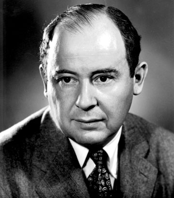

Введение

Джон фон Нейман (1903–1957) — выдающийся венгерско-американский математик и физик-универсал, внесший революционный вклад в квантовую механику, теорию игр, экономику, ядерную физику (Манхэттенский проект) и информатику. Если люди отказываются верить в простоту математики, то это только потому, что они не понимают всю сложность жизни
- говорил Джон фон Нейман
Краткая биография
Джон фон Нейман (1903–1957) — гениальный венгеро-американский математик и физик, совершивший революцию сразу в нескольких областях науки. Родился в Будапеште, с детства поражал окружающих феноменальной памятью и математическим талантом, а в 1930 году переехал в США, став одним из первых профессоров знаменитого Института перспективных исследований в Принстоне. Он вошел в историю как создатель «архитектуры фон Неймана» — базового принципа совместного хранения данных и программ в памяти, который до сих пор лежит в основе работы большинства современных компьютеров. Кроме того, ученый заложил математический фундамент квантовой механики, вместе с Оскаром Моргенштерном создал теорию игр для моделирования экономических процессов, а в годы Второй мировой войны сыграл ключевую роль в Манхэттенском проекте, рассчитав взрывное устройство для первой атомной бомбы. Обладая уникальной скоростью мышления, фон Нейман внес фундаментальный вклад в геофизику, метеорологию и теорию автоматов, оставив колоссальное научное наследие, несмотря на раннюю смерть от рака в возрасте 53 лет.
Brief Biography
John von Neumann (1903–1957) was a brilliant Hungarian-American mathematician and physicist who revolutionized several scientific fields. Born in Budapest, he amazed those around him from childhood with his phenomenal memory and mathematical talent; in 1930, he moved to the United States, becoming one of the first professors at the renowned Institute for Advanced Study in Princeton. He is remembered for creating the "von Neumann architecture"—the fundamental principle of storing both data and programs in memory, which remains the basis for the operation of most modern computers. Furthermore, he laid the mathematical foundations of quantum mechanics, developed game theory for modeling economic processes in collaboration with Oskar Morgenstern, and played a pivotal role in the Manhattan Project during World War II by calculating the design of the explosive device for the first atomic bomb. Possessing an extraordinary speed of thought, von Neumann made fundamental contributions to geophysics, meteorology, and automata theory, leaving behind a colossal scientific legacy despite his premature death from cancer at the age of 53.